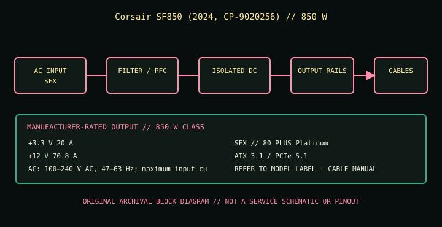

[ POWER CONVERSION // IDENTIFIED MODEL ]
Corsair SF850 (2024, CP-9020256)
Model-specific catalog entry for manufacturer identifier CP-9020256. Verify the entire printed model, suffix, hardware revision and region on the physical unit before selecting or servicing it.

HIGH-VOLTAGE SAFETY: Disconnect mains before external inspection. Never open or probe a PSU; dangerous voltage can remain after unplugging. Replace damaged, wet, burned, modified or unidentified units as complete assemblies or use qualified service.
Model-specific input, output & fit
| Manufacturer model / SKU | Corsair SF850 (2024, CP-9020256); CP-9020256. Regional suffix or revision must match the physical label. | ||||||||||||||||||
|---|---|---|---|---|---|---|---|---|---|---|---|---|---|---|---|---|---|---|---|
| Form factor / efficiency / generation | SFX; 80 PLUS Platinum; ATX 3.1 / PCIe 5.1. Form factor is not proof of electrical compatibility. | ||||||||||||||||||
| AC input | 100–240 V AC, 47–63 Hz, 10–5 A; confirm the exact regional unit label. | ||||||||||||||||||
| Maximum DC output | 850 W total continuous-output class as published by the manufacturer. A total wattage rating does not replace per-rail/combined limits or label verification. | ||||||||||||||||||
| DC output rails |
| ||||||||||||||||||
| Output connectors / cables | Fully modular Type-5 cabling: ATX 24-pin ×1; EPS 4+4-pin ×2; PCIe 6+2-pin ×3; 12VHPWR 12+4-pin ×1; SATA ×8; peripheral 4-pin ×3. Do not use Type-4 or other Corsair modular cables unless the maker compatibility table explicitly lists this SKU. | ||||||||||||||||||
| Mechanical envelope | 125 × 100 × 63.5 mm (SFX; width × depth × height). Confirm screw points, inlet/fan orientation, airflow, clearance and tolerance against the case drawing; do not force-fit. | ||||||||||||||||||
| Protection / limits | Over-current, over-voltage, under-voltage, over-power, short-circuit and thermal protections are model/revision specific. Use the correct manual; do not test protections or probe inside the unit. |
Electrical compatibility & safe installation
- This is the 2024 SFX CP-9020256 revision, not the SFX-L SF850L. Check exact Type-5 cable part compatibility, connector end orientation, case clearance and GPU vendor cable instructions. The 16-pin lead must be fully inserted with no sharp bend or side load at the housing. Never substitute cables by connector appearance.
- Confirm the AC mains supply is within the PSU input range and the region’s plug/cord/circuit requirements. Stop if the nameplate differs from this reference.
- Check ATX motherboard, EPS CPU and GPU requirements, individual/combined rail ratings, total demand, transient excursions, thermal environment and case mounting separately; connector shape or nominal wattage alone does not establish suitability.
- PSU-side modular pinouts are not standardized. Never transfer, splice, repin or adapt detachable cables unless the manufacturer explicitly approves the exact cable for this exact model and revision.
- When using a high-current 16-pin GPU cable, follow PSU and GPU manufacturer seating, bend-radius, clearance and load guidance. Do not energize a connector that is loose, visibly damaged, overheated or under side pressure.
- Do not open, repair, or electrically probe the PSU. Isolate power and replace a suspect unit; qualified technicians must follow the correct model-specific procedure.
Revision and sourcing notes
This entry describes only the listed SKU/model family. Manufacturers may change bundles, electrical tables, regional input ratings or cable generations without changing the marketing name. Verify the exact unit label and matching documentation; if any rating or connector count differs, use that exact manual/nameplate and do not install by assumption.
Published ratings describe a new compliant product, not the condition or remaining life of a used unit.
Manufacturer sources & standards
- CORSAIR official product pageManufacturer product identity, nominal power, form factor and model-specific features. Match the printed SKU/revision on the unit.
- CORSAIR official specifications / documentationManufacturer source for the electrical ratings, connector bundle, dimensions and installation constraints; open the edition matching the exact model and market.
- CORSAIR further official referenceAdditional manufacturer source or technical guidance. If a referenced document is a product-specific manual, its instructions and unit label govern.
- Intel ATX desktop PSU design guideCompatibility context for standard ATX-family systems only; this document does not validate a specific cable pinout or proprietary interface.
Standards references apply only to the interface they cover. Model-specific manufacturer manual and unit label control installation; this reference is not a service procedure, certification, or pinout.